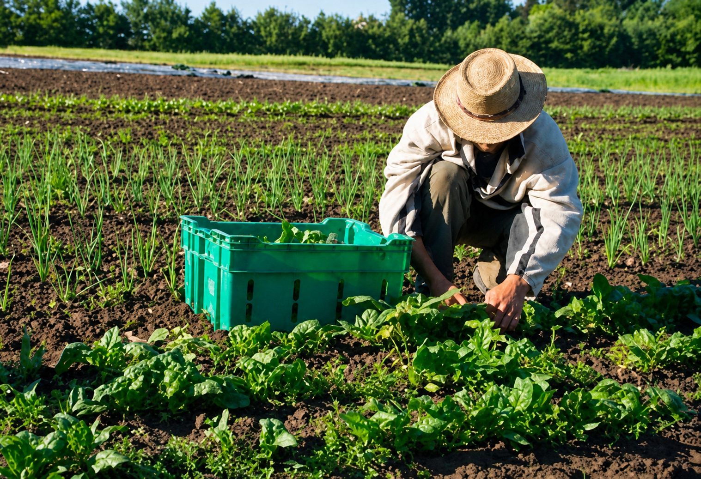
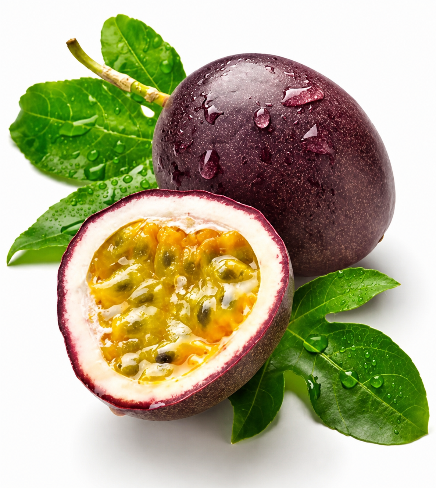
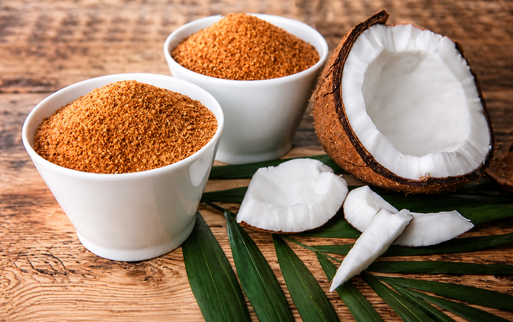
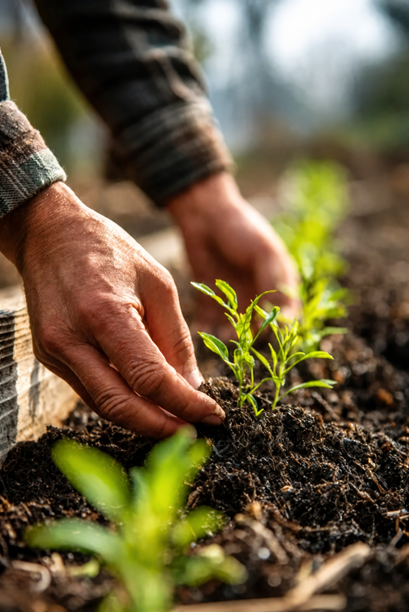
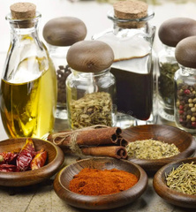
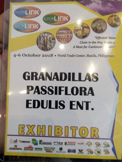

Agricultural
sourcing
We work with growers in Quezon and across the region to source quality crops and agricultural products.
Agricultural supply & sourcing • Est. 2010
Granadillas connects responsible agricultural production with growers, processors and businesses through quality products, value addition and purposeful partnerships.
Serving growers, processors, tea shops, businesses and agricultural partners.
Scroll to explore
Built from hands-on
farm experience.
Who we are
Granadillas Passiflora Edulis Enterprise produces tropical fruit purees and agricultural by-products while trading agricultural supplies for growing businesses.
Established in 2010, we have built practical experience in passion fruit and vegetable production using organic farming practices—and we collaborate with growers and businesses to create more value across the agricultural chain.
“Providing you with passion is our business.”Discover how we work
Our business
We operate across agricultural production, sourcing, distribution, value addition and business-to-business supply.
We work with growers in Quezon and across the region to source quality crops and agricultural products.
We help turn agricultural products into higher-value offerings for business customers.
We distribute organic fertilizers, trellis materials and selected inputs to partner growers.
We provide selected basic and prime commodities to businesses and market partners.
Our product lines

100% organic-based fruit puree available frozen or concentrated.

Value-added coconut materials for agricultural and industrial applications.

Natural inputs designed to support healthier soil and more productive crops.

Selected staple products for established business and market partners.
Product availability and specifications can be discussed directly with our team.
Sourcing & supply
Granadillas works with growers, suppliers and business partners to help connect agricultural supply with real market requirements.
Submit a sourcing inquiryShare your product, quantity and business requirements.
Our network helps identify potential products and supply opportunities.
We coordinate with relevant partners and discuss next steps directly.
Agricultural services
We work to expose partner growers to better farming practices and encourage sustainable methods that protect soil health, productivity and natural resources.
Sustainable agriculture
Organic and sustainable practices can support productive farms today while safeguarding the resources and livelihoods that matter tomorrow.
Our business network
Our work is strengthened by people and organizations working across the agricultural value chain.
Business value
Connecting agricultural products with business opportunities.
Promoting organic and sustainable agricultural alternatives.
Supporting responsible practices that protect the future of farms.
Improving the commercial potential of agricultural products.
Building stronger connections across the agricultural supply chain.
Our journey
Shared Granadillas products with more communities through local events and fairs.
Established a dedicated passion fruit farm of our own.
Joined the Food & Beverage Expo at the World Trade Center.
Became a supplier to manufacturing companies and leading tea shops.
Established our own production area to support value addition.
Became a member of MSMEs in Quezon Province.

One of the many meaningful steps in our continuing journey.
Building better connections
Granadillas continues to explore better ways to link producers, suppliers and businesses—creating more efficient opportunities across the agricultural supply chain.
Get in touch
Whether you’re looking for agricultural products, farm supplies, sourcing opportunities or potential partnerships, we’d be glad to hear from you.
Emaililovegranadillas@gmail.com Phone+63 916 725 2828Location117 Maharlika Highway
Bukal, Pagbilao, Quezon